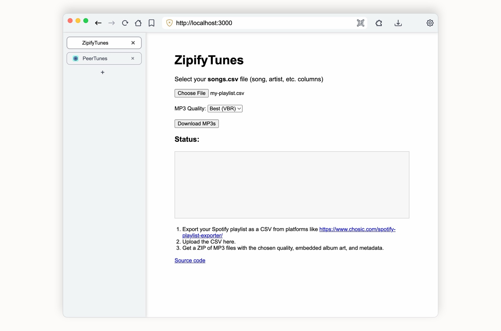
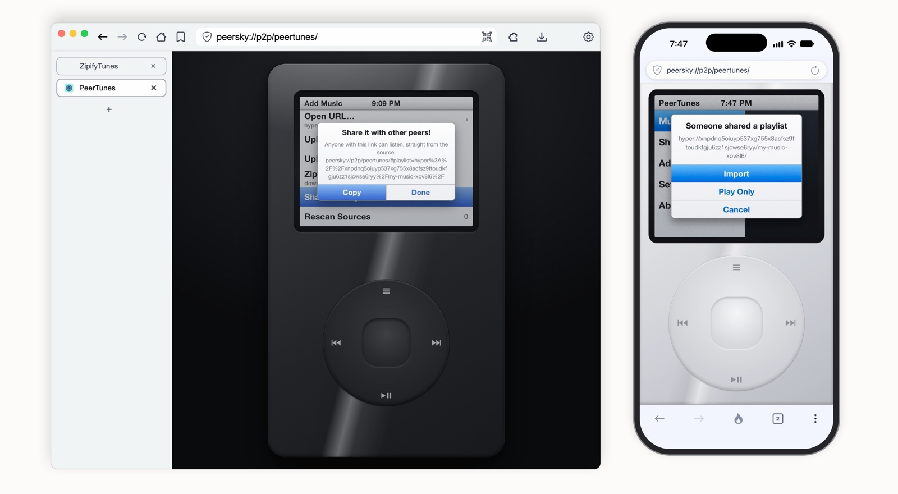
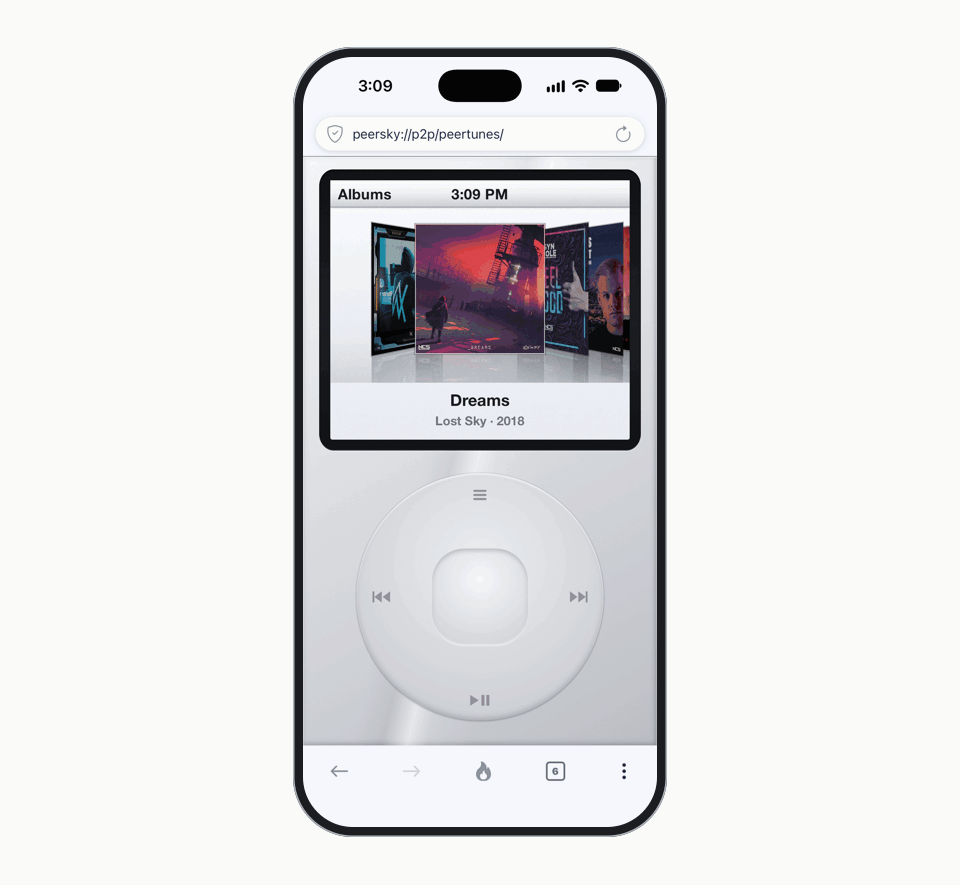
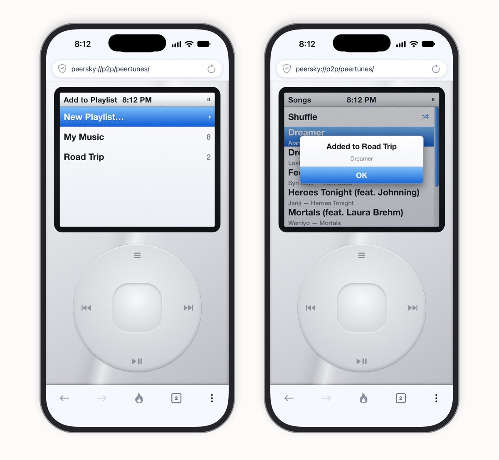
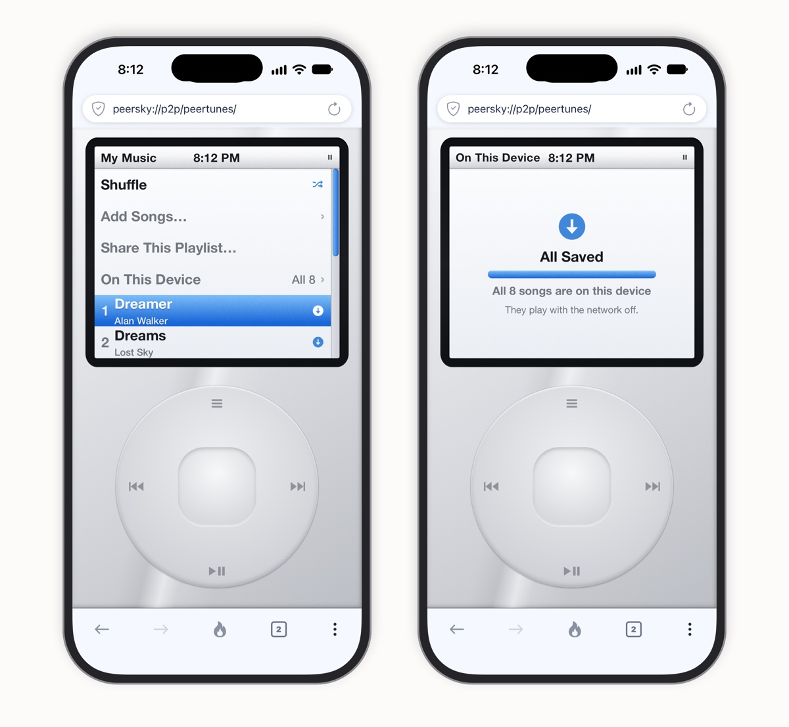
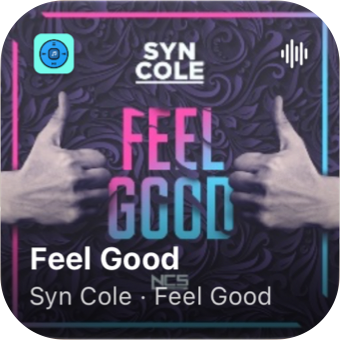
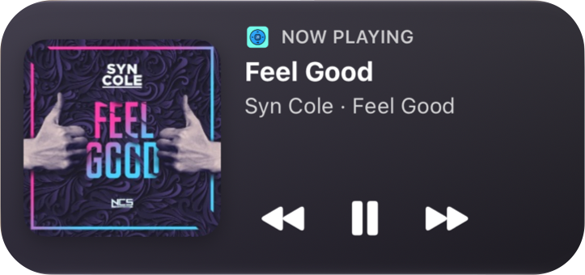

With a streaming app, you never really have your music. You pay every month to borrow it. Songs leave the catalog without warning, the price goes up, the app decides what plays next, and the moment you stop paying, your library is gone.
PeerTunes is the music player in PeerSky, on your computer and on your phone. It plays songs you keep as files. There's no account, no subscription and no server. Your library lives on your devices, it moves from your laptop to your phone straight between the two, and once a song is on your phone, it plays anywhere, even with no signal.
It's for anyone who wants their music to stay theirs: people with a folder of songs they bought years ago, people tired of paying for music streaming every month, or of constant ads when they don't pay, and anyone who spends time on a plane, on the subway, or somewhere the signal drops. Nothing about what you listen to leaves your devices, not even to us.
You need PeerSky on each device. Get it for your computer and your phone at peersky.p2plabs.xyz.
1. Get your songs as files
If you already have music files, from CDs you ripped or albums you bought, you can skip to the next step. If your music lives in a streaming playlist, start with Zipify Tunes. In PeerTunes, it's under Add Music, then Zipify Tunes.
Zipify Tunes is a free, open source tool that runs on your own computer. You export your playlist as a CSV file, a plain list of songs. It takes lists from Spotify, Apple Music, YouTube Music or one you write yourself, and for a Spotify playlist, tools like chosic.com make the file for you. Pick the file and an MP3 quality, and it makes an MP3 for each song with its title, artist, album, year and a square cover built in, then hands you all of them in one ZIP. Everything happens on your computer. Setting it up takes Node.js and ffmpeg, and its GitHub page walks you through it.
Zipify Tunes is for your own personal use. Respect copyright and the terms of the services you use, and don't share music you don't have the rights to.

2. Add them to PeerTunes
Open PeerTunes from the PeerSky home screen and go to Add Music. Choose Upload Folder or Upload Files, or drop the songs anywhere on the page. PeerTunes reads the title, artist, album and cover from each file, so everything shows up properly named. It reads MP3, FLAC, M4A, OGG, Opus and WAV. A song with no cover gets a plain one, and a song with no album tag is filed under its folder's name.
You can also add songs from a hyper:// folder, from a web address, or by scanning a QR code with a link in it.
3. Send them to your phone
In Add Music on your laptop, choose Share Library. PeerTunes puts your songs in a hyper:// drive on your laptop and gives you a link. Open the link on your phone, and PeerTunes asks what to do with it. Import saves the songs into your library as a playlist. Play Only streams them once and leaves your library as it was.
The songs come straight from your laptop to your phone. They don't go up to anyone's cloud on the way. Share a playlist the same way with a friend, from your laptop or your phone, and their PeerTunes asks them the same question, so nothing lands in their library unless they want it.

4. Spin the wheel
PeerTunes is played with a wheel. Drag your finger around it to scroll, tap the middle to pick, and press the top to go back, the bottom to play or pause, and the sides to skip. Every step clicks, and on a phone you feel a small tap too. You can turn either one off in Settings.
Albums open as a row of covers that flip in 3D as you turn. Artists, Songs and Genres are plain lists. On the song screen, the wheel turns the volume. Press the middle once and it moves through the song instead, or touch and hold the bar under the song and slide.

5. Make playlists
Hold the middle of the wheel on any song, or long press it on the screen, and pick a playlist to drop it in, or make a new one right there. Inside a playlist, Add Songs lets you tick songs off a list, and holding a song takes it out. The songs always stay in your library.

6. Keep it offline
An imported playlist plays straight from the device that shared it. Heading somewhere with no signal? Open the playlist on your phone and tap Keep On This Device. PeerTunes saves every song and counts them as they arrive. Each song gets a mark, blue once it's on the phone and gray until then. When it says All Saved, the playlist plays with the network off.
If the device that shared it goes offline halfway, PeerTunes saves the rest once it's back. If you turn on Download only on Wi-Fi in PeerSky, it waits for Wi-Fi instead of using your data.

How it works
A streaming app keeps every song on its company's servers and sends it to you each time you press play. PeerTunes plays files that are already on your device, and when songs need to move, they go straight from one of your devices to another.
Where the songs live
StreamingOn the company's servers. You get them only while you pay.
In PeerTunesOn your devices, as files you keep.
Your library
StreamingA list on your account, and songs can vanish from it when the company loses the rights.
In PeerTunesKept in the app on your device. A song stays until you delete it.
Getting songs to your phone
StreamingEach song comes down from the company's servers.
In PeerTunesYour laptop shares a hyper:// drive, and your phone gets the songs straight from it, encrypted on the way. On the same Wi-Fi, they find each other on the local network.
What you listen to
StreamingEvery play goes into your account's history.
In PeerTunesThere's no account and no tracking. What you play stays on your device.
No signal
StreamingOnly songs you downloaded inside the app, and only while you keep paying.
In PeerTunesEvery song you kept on the device, for as long as you like.
The link only travels where you send it. No cloud in between.
A shared playlist loads from the device that shared it, so keep PeerSky open there until the other side has kept the songs. Anyone with the link can listen, so send it only to people you want to have it. Devices connect straight to each other, so they can see each other's IP address, as in any peer-to-peer app. If you'd rather they didn't, turn on a VPN that allows peer-to-peer connections.
Delete a song, a whole album or a playlist when you're done with it, or clear everything at once from Settings.
The little things
Lock your phone and the song keeps playing, with its cover and controls on the lock screen. The top of the player shows whether a song is playing or paused, and a Bluetooth mark when the sound goes to headphones or a car. Close the app and open it again, and it comes back to the same screen with your song paused where you left it. In Settings you can pick a silver or a black body, turn shuffle and repeat on, and turn the clicks off. PeerTunes also shows the language you picked in PeerSky, Arabic, Persian and Urdu included.
On iPhone, PeerTunes has home screen widgets too. The small one shows what's playing, cover and all. The medium one adds back, play or pause, and skip, so you can change songs without opening the app.


What people use it for
A library you own
Bring the songs you bought or ripped years ago back together, with their covers and names.
Trips and flights
Keep a playlist on your phone before you go, and play it the whole way with no signal.
Mixtapes for friends
Share a playlist as a link. Your friend picks Play Only or Import, and nothing touches their library unless they want it.
Laptop to phone
Keep the songs on your laptop, and send them to your phone whenever you add more.
Music in this post
The songs in the pictures and the video are free releases from NoCopyrightSounds: Alan Walker, Dreamer, Lost Sky, Dreams, Syn Cole, Feel Good, Janji, Heroes Tonight (feat. Johnning), Warriyo, Mortals (feat. Laura Brehm), Cartoon and Jéja, On & On (feat. Daniel Levi), Tobu, Roots and Elektronomia, Sky High. Music provided by NoCopyrightSounds.
For the technical details, see PeerTunes, PeerTunes on mobile and Zipify Tunes on GitHub.
Put your favorite playlist on your phone and leave the subscription behind. Get PeerSky at peersky.p2plabs.xyz.